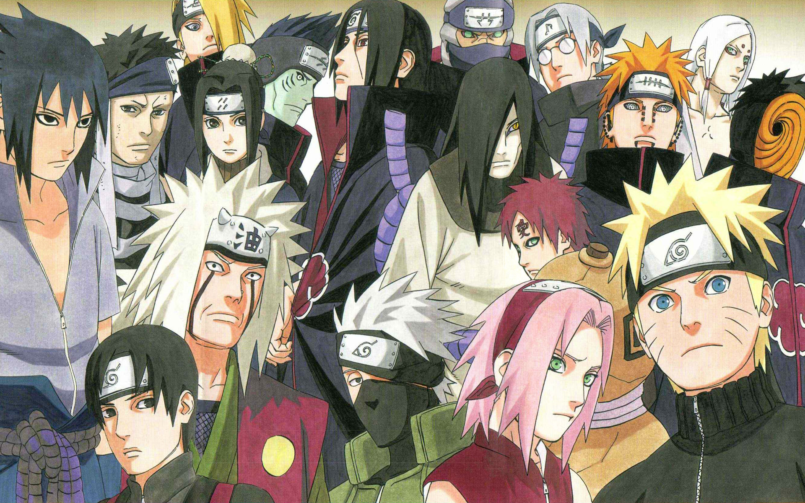

| 在《火影忍者》中，友情是核心主题之一。鸣人与他的伙伴们之间建立了深厚的友谊，他们一起经历各种艰难困苦，互相支持和鼓励。这种友情的力量不仅帮助他们克服了困难，还使他们变得更加坚强和自信。 |
| |
| 该作品强调了奋斗和成长的重要性。鸣人从一个调皮捣蛋的少年成长为一个勇敢、坚定的忍者，他的成长过程中充满了挑战和考验。通过不断努力和坚持，他逐渐实现了自己的梦想，并成为了一个受人尊敬的忍者。 |
| |
| 二， |
| 《火影忍者》中的角色都坚持自己的信念，并为保护自己的家园而奋斗。他们面对各种困难和危险，但始终不放弃，坚持自己的信念。这种坚持和信念的力量不仅激励了其他角色，也给观众带来了积极的启示。 |
| |
| 三， |
| 《火影忍者》中的角色塑造丰富多彩，每个角色都有独特的个性和背景故事。主人公漩涡鸣人是一个乐观、勇敢的忍者，他始终相信自己能够成为火影。其他角色如佐助、雏田、卡卡西等也都有着自己的成长故事和个性特点，使整个故事更加丰富和有趣。 |
| |
| 四， |
|  |
| 《火影忍者》中的角色塑造丰富多彩，每个角色都有独特的个性和背景故事。主人公漩涡鸣人是一个乐观、勇敢的忍者，他始终相信自己能够成为火影。其他角色如佐助、雏田、卡卡西等也都有着自己的成长故事和个性特点，使整个故事更加丰富和有趣。 |
| |
| 《火影忍者》在全球范围内产生了巨大的影响力。它不仅引发了一股忍者热潮，还影响了全球观众的青春岁月。许多观众表示，这部动画陪伴了他们的成长，给他们带来了勇气和动力。 |
| |
| 五， |
| 《火影忍者》是一部深受喜爱的动画巨作，它以忍者世界为背景，讲述了主人公漩涡鸣人的成长故事。通过探讨友情、奋斗和成长等主题，该作品给观众带来了积极的影响，并成为了一部在全球范围内具有重要影响力的动画作品。 |
create by 张凯阳
|
| |